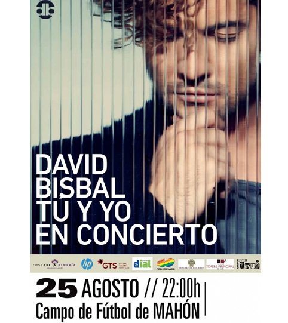

Events - A cultured island
 The good life requires good surroundings, which Menorca has. The good life insists on high quality gastronomy, which Menorca has. And the good life needs to stimulate the brain with intense cultural activity, which Menorca also has. This island doesn’t even have a population of 100.000 and yet generates a huge quantity of cultural acts that you wouldn’t even imagine, and these intensify during the summer. During your stay here you will certainly have time to go to some.
The good life requires good surroundings, which Menorca has. The good life insists on high quality gastronomy, which Menorca has. And the good life needs to stimulate the brain with intense cultural activity, which Menorca also has. This island doesn’t even have a population of 100.000 and yet generates a huge quantity of cultural acts that you wouldn’t even imagine, and these intensify during the summer. During your stay here you will certainly have time to go to some.
To start, this small piece of land has the oldest opera house in Spain, the Teatro Principal in Mahón. The theatre has been modernised and can cater for a wide variety of shows and theatre, and also high class opera. You will surely find something to your taste.
Also in Mahón there is another jewel, the Santa Maria organ with over 200 years of history. Periodically organ concerts are organised there, demonstrating that time has not diminished its wonderful sound, on the contrary, it improves just like good wine.
During the summer in Mahón and also Ciutadella quality musical festivals are organised by the young musicians from the towns, Menorca providing the perfect background for enchanting melodies.
If you prefer other types of music, in the summer the island has lots of different concerts, from small groups to large bands. You can find a concert in the corner of town, or in a football ground. Check the programmes to see what is on.
Generation after generation the Menorcans have cared for their traditions, and nowadays, there are two that have been conserved which above all show the islands identity. On the one hand folk dancing, based on popular island songs and on the other - “gloses”. This last one is a tremendously complicated discipline, which requires great mental agility from the “glosadors”. It consists of a dialogue between various people, and with the same music in the background, they have to make sure their spontaneous verses rhyme and have the correct meter. They are true masters of words. They act in Catalan and it is worth watching them.
If you like art, pause at one of the art galleries, or visit the expositions on display at various public buildings now used for this purpose. Don’t forget to look at the local artists. Many are widely known, but they haven’t forgotten their roots. Menorca is always in their hearts.
As you can see, if you want to discover Menorcan culture you have multiple options to do so. Remember the island is not just a piece of land. Menorca would not be what it is without its culture. Have a look and enjoy it.